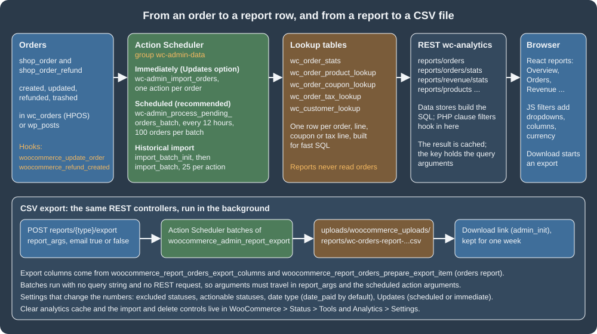
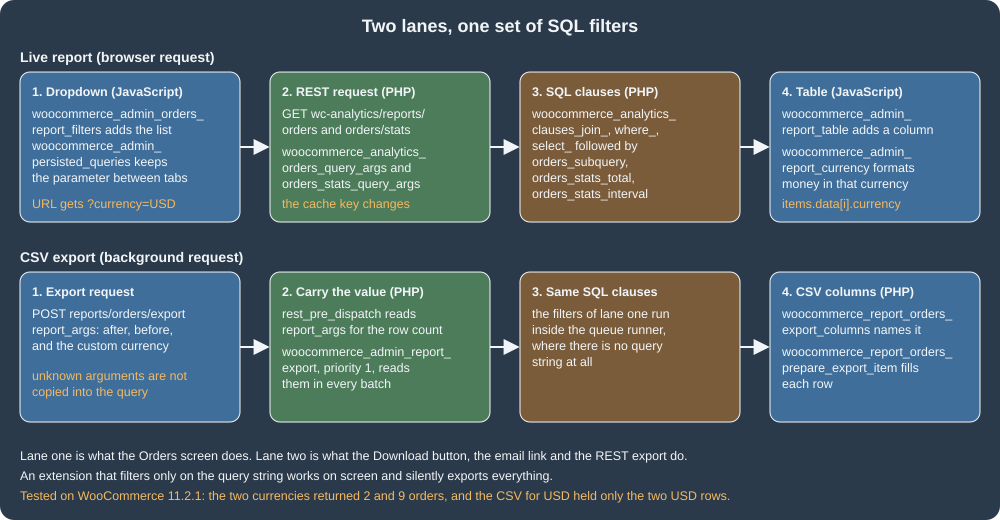

Analytics
|
This content was generated with the assistance of AI and should be verified against the official documentation before being relied on in production. |
This page was written against WordPress 7.1.3 and WooCommerce 11.2.1 (released 2026-10-09; 11.3 was in beta on the check date) and was checked on
2026-10-27. Analytics ships in WooCommerce core, with nothing to buy and nothing to install. It is the
reporting screen that replaced the report pages of the book era. The feature flag it once had was retired in 11.1, so it is simply there; a
toggle option (woocommerce_analytics_enabled, yes on the test store) is still consulted by the order screens. This page explains how an order
becomes a number in a report, which settings move the numbers, how to read the same data over REST, and how to extend the Orders report with a
filter, a table column and a CSV column that also survives the background export. It builds on
Action Scheduler, because every step of the pipeline is a scheduled action, on
HPOS, because the example reads the order currency from the order tables, and on
REST API and webhooks for the API conventions. The running example is Pocket Coffee, which sells
in euros and, to a second market, in US dollars: the extension lets the owner see the Orders report one currency at a time and export it that way.
What Analytics is
Analytics is a React application inside WooCommerce Admin. It lives under WooCommerce > Analytics, with these pages (the menu items come from
Analytics::get_report_pages() in the 11.2.1 source and can be changed with the filter woocommerce_analytics_report_menu_items):
| Page | What it shows |
|---|---|
Overview |
A dashboard of the key figures and the chart tiles, fed by the performance indicators route of the REST API. |
Products, Variations, Categories |
Items sold, net sales and orders per product, per variation and per category. |
Revenue |
Gross sales, refunds, coupons, taxes, shipping, net and total sales over time, with a table per interval. |
Orders |
One row per order (and per refund) with status, customer, products, coupons and net sales; the report this page extends. |
Coupons, Taxes |
Discounts given per coupon and tax collected per tax rate. |
Downloads |
Downloads of downloadable files; the data comes from |
Stock |
Stock levels; the page is registered only when the option |
Customers |
Customers with their orders and spend; it sits under the WooCommerce menu (path |
Settings |
Excluded statuses, actionable statuses, default date range, date type, update mode, and the import, cache and delete controls. |
The older WooCommerce > Reports screen that the books describe (sales by date, by product, by category, customer lists, stock and tax reports) is
a different mechanism: it builds its figures by querying orders directly. In 11.2.1 the screen still answers at admin.php?page=wc-reports, and the
core source comments say the legacy reports will be moved to a separate plugin. New work should target Analytics: it scales better because it reads
precomputed tables, it has a REST API, and it is what the extension points in this page hook into. A book recipe that reads _order_total or
_order_currency from wp_postmeta for a report is wrong on a store that uses HPOS, where those values live in wc_orders.
The data model: lookup tables
Analytics never reads orders while a report is rendered. It reads lookup tables that WooCommerce keeps in step with the orders: one narrow, indexed row per order, per order line, per coupon use and per tax line, plus one row per customer. These are the tables of the 11.2.1 schema, with the columns listed by the database of the test store:
| Table | Columns (11.2.1) | Read by |
|---|---|---|
|
|
Orders, Revenue, Overview. Refunds have their own rows (with a negative total and the order they refund in |
|
|
Products, Variations, Categories. |
|
|
Coupons. |
|
|
Taxes. Since 11.2.0 the table is keyed on |
|
|
Customers, and the customer filters of every report. |
Two consequences matter in practice. First, a report can only be as current as the lookup tables: an order that has not been imported yet is not in any report, whatever its status says. Second, the lookup tables are derived data. They can be rebuilt from the orders at any time (the import below), so a custom extension should add columns or side tables rather than edit rows by hand, and should never treat them as the source of truth for money.
From an order to a report row

The figure shows the whole path. The upper row is the reporting pipeline; the lower box is the CSV export, which reuses the same REST controllers from the background.
Immediate and scheduled updates
Which hook moves an order into the lookup tables depends on the setting Analytics > Settings > Updates, stored in the option
woocommerce_analytics_scheduled_import:
| Option value | Label in the settings screen | Behaviour |
|---|---|---|
|
Scheduled (recommended) |
A recurring Action Scheduler action, |
|
Immediately |
Every |
The option was inverted and renamed in 10.5.0 (it used to be woocommerce_analytics_immediate_import, where yes meant immediate); WooCommerce reads the old
option as a fallback until its upgrade routine has run. When neither option exists the code treats the store as immediate: on the test store,
OrdersScheduler::is_scheduled_import_enabled() returned false while the REST settings endpoint listed the value as yes, so read the option from
the database, not from the screen, when the two matter to a script. Switching from scheduled to immediate runs one final catch-up batch so that no
order is lost in between.
Whichever mode is active, the import of one order (OrdersScheduler::import()) does this: it loads the order, skips records that are not
shop_order or shop_order_refund, skips an order without a creation date, skips test orders, skips a trashed record that Analytics does not
already hold, then writes the five lookup tables (order stats, products, coupons, taxes, customer), syncs the order’s refunds, and invalidates the
report cache. A test order is one that WooPayments marked with _wcpay_mode equal to test; the filter woocommerce_analytics_is_test_order
(added in 10.7.0) lets another gateway’s sandbox orders be excluded as well. The filter receives $is_test and the order (the parent order for a refund):
add_filter(
'woocommerce_analytics_is_test_order',
static function ( $is_test, $order ) {
return $is_test || 'yes' === $order->get_meta( '_pocket_coffee_sandbox' );
},
10,
2
);On the test store this was run against an order carrying that meta key: OrdersScheduler::import() with the filter wrote 0 rows to wc_order_stats, and
the same call without the filter wrote 1. An order that has already been imported is not removed when it later becomes a test order; the filter
only keeps new imports out.
Failures do not stop the queue. An order whose import throws is skipped and its ID is remembered in the option
woocommerce_admin_analytics_failed_order_imports (at most 1000 IDs, plus an overflow counter), the failure is written to the WooCommerce log
under the source wc-analytics-order-import, and the Analytics settings screen offers a targeted retry.
Historical import
A store that has been running before Analytics, a store restored from a backup, and a store whose lookup tables were deleted all need a historical import. It is Analytics > Settings > Import historical data in the browser, and it is a REST call underneath:
Route (namespace wc-analytics) |
Method | Purpose |
|---|---|---|
|
POST |
Starts an import. Parameters: |
|
GET |
|
|
GET |
How many customers and orders an import with the same parameters would handle. |
|
POST |
Cancels every pending and in-progress import action. |
|
POST |
Schedules the deletion of all lookup data and removes the import options. Re-import afterwards; the screen asks for confirmation for a reason. |
All five check the capability that manages WooCommerce settings (wc_rest_check_manager_permissions( 'settings', 'edit' )). The import is a chain of
scheduled actions in the group wc-admin-data: wc-admin_import_batch_init_customers and wc-admin_import_batch_init_orders count the work and
queue one wc-admin_import_batch_* action per page, and each batch action imports 25 records (the filter woocommerce_analytics_regenerate_batch_size
changes the size per scheduler and action). The orders scheduler depends on the customers scheduler so that customers exist before their orders are
written. Batches are scheduled five seconds ahead, so a script that runs the queue at once finds nothing to do.
SITE=http://localhost:8081
# ck_xxxxxxxx / cs_xxxxxxxx: a REST key with read/write permission (WooCommerce > Settings > Advanced > REST API)
AUTH='ck_xxxxxxxx:cs_xxxxxxxx'
curl -s -u "$AUTH" "$SITE/wp-json/wc-analytics/reports/import/totals?days=30&skip_existing=true"
curl -s -u "$AUTH" -X POST -H 'Content-Type: application/json' \
-d '{"days":30,"skip_existing":false}' "$SITE/wp-json/wc-analytics/reports/import"
curl -s -u "$AUTH" "$SITE/wp-json/wc-analytics/reports/import/status"Basic authentication with a consumer key works only over HTTPS; the local Docker site is plain HTTP, so the calls of this page added the header
X-Forwarded-Proto: https, which the official WordPress image maps to the HTTPS server variable (see
REST API and webhooks). The responses seen on WooCommerce 11.2.1:
{"customers":1,"orders":5}
{"status":"success","message":"Report table data is being rebuilt. Please allow some time for data to fully populate."}
{"customers":{"imported":0,"total":3},"orders":{"imported":0,"total":36},"imported_from":"2026-09-27 00:00:00","is_importing":true}Once the batches had run, the status read {"customers":{"imported":3,"total":3},"orders":{"imported":39,"total":36}}: the orders figure is larger than the
total because orders created while the import ran were imported by the immediate-mode hooks as well, and refunds count as records of their own.
The same import can be started from code with Automattic\WooCommerce\Admin\ReportsSync::regenerate_report_data( $days, $skip_existing ), which
returns a WP_Error while another import is running. The action woocommerce_analytics_regenerate_init fires when it starts.
Running the queue by hand
Action Scheduler runs its queue from WP-Cron or a real cron job (see Action Scheduler). On a development site without traffic nothing triggers it, which looks like "Analytics is empty". WP-CLI runs the queue immediately, and it can be limited to the Analytics hooks so that other plugins' actions are left alone:
wp action-scheduler run --hooks=wc-admin_import_batch_init_customers,wc-admin_import_batch_init_orders,wc-admin_import_batch_customers,wc-admin_import_batch_orders,wc-admin_import_customers,wc-admin_import_orders --batch-size=300The tested sequence was: start the import, wait the five seconds, run the command twice (the first run executes the two batch_init actions, which queue the
batches; the second executes the batches). The --group=wc-admin-data option, which looks like the obvious filter, was refused on the test store with
The group "wc-admin-data" does not exist although the group is in wp_actionscheduler_groups, so the hook list is the reliable filter.
The report cache
Every data store caches its result in a transient (WEEK_IN_SECONDS) whose key is built from the normalised query arguments, and stamps it with a
version kept in the woocommerce_reports transient version. Any order import and a handful of settings invalidate the version (a new
version makes every stored result stale at once). Three consequences:
-
A custom query argument must be added to the arguments with the
woocommerce_analytics_*_query_argsfilters, otherwise two different filter values share one cache key and the second request shows the first one’s data. The example below does it. -
force_cache_refresh=trueas a parameter skips the stored value for one request (used in the tests of this page), and the filterwoocommerce_analytics_report_should_use_cache(receivestrueand the cache key) turns caching off for chosen reports. -
Changing the date type option with
update_option()invalidates the cache, but deleting the option does not: afterwp option delete woocommerce_date_typeon the test store the reports kept the numbers of the previous setting until the tool WooCommerce > Status > Tools > Clear analytics cache (wp wc tool run clear_woocommerce_analytics_cache --user=<admin>) was run.
Settings that change the numbers
Analytics > Settings writes WordPress options, and the same group is readable and writable over wc/v3/settings/wc_admin:
| Option (settings id) | Default | Effect |
|---|---|---|
|
|
Statuses left out of report totals. Since 11.2.0 the default can be changed with |
|
|
Statuses that need action by the shop manager: the "Orders to fulfill" count of the activity panel and the order lists linked from Analytics. Filter: |
|
|
The period and comparison every report opens with, as a query string. |
|
|
The date column of |
|
see above |
|
The date type is the setting that surprises shop owners most. With the default date_paid, an order that has not been paid has no date, so a
date-ranged report leaves it out until it is paid. Pocket Coffee offers bank transfer (BACS), whose orders wait in on-hold. At the time of the test,
the Orders report for 2026 in euros showed 10 orders with date_paid, none of them on hold, and 23 orders with date_created, 12 of the extra
rows on hold; the totals moved from 306.90 to 661.51 for the same orders. Neither answer is wrong: paid revenue and booked revenue are
different questions, and the setting should be chosen on purpose and written down.
# What the screen would show, over REST (the settings group of WooCommerce Admin)
curl -s -u "$AUTH" "$SITE/wp-json/wc/v3/settings/wc_admin"
# Change the date type and drop the cached reports
wp option update woocommerce_date_type date_created
wp wc tool run clear_woocommerce_analytics_cache --user=<admin-login>The first request returned the five settings above with their types (multiselect, multiselect, text, select, radio) and their current values.
The filters that decide the defaults take plain arrays, for example (checked on the test store, where the default list became
pending,cancelled,failed,refunded):
add_filter(
'woocommerce_analytics_settings_default_excluded_order_statuses',
static function ( $statuses ) {
$statuses[] = 'refunded';
return $statuses;
}
);Reading Analytics over REST
The React app is a client of the wc-analytics REST namespace, and so can any script with a key that carries the view_woocommerce_reports capability.
The routes are not part of the public REST API documentation: they are an internal API of WooCommerce Admin, stable enough to build extensions on (the
extension points below use them) but not guaranteed across majors, so integrations should pin the WooCommerce version they test against.
Route (namespace wc-analytics) |
Returns |
|---|---|
|
One item per order or refund: |
|
Totals and an interval series ( |
|
The table and chart data of the matching page. |
|
The figures of the Overview tiles and the list of indicators that can be shown. |
|
Starts and follows a CSV export (below). |
|
The import controls above. |
The common parameters are after and before (ISO 8601, interpreted in the store’s timezone), interval, per_page (up to 100), page, orderby,
order, status_is, status_is_not, product_includes, coupon_includes, customer_type, refunds and force_cache_refresh. A request on the test store:
curl -s -u "$AUTH" \
"$SITE/wp-json/wc-analytics/reports/revenue/stats?interval=year&after=2026-01-01T00:00:00&before=2026-12-31T23:59:59"returned a totals object with orders_count 11, num_items_sold 19, gross_sales 395.8, refunds 41.8, shipping 18.4 and net_revenue 354 at the time of
the run; the figures change as other orders are created, which is exactly the point of reading them from the API instead of copying them into a document.
Extending the Orders report
The official guide extends the Orders report with a currency selector. Its SQL joins wp_postmeta on _order_currency, which is the book-era
storage and returns nothing useful on a store that keeps orders in the HPOS tables. The version below is the same idea rewritten for 11.2.1: it
reads the currency from whichever storage is authoritative, carries the selection through the REST request, the cache key and the export, and is
checked with PHPCS. It is the Pocket Coffee plugin pocket-coffee-analytics, in three files.

The main file
The header declares the dependency on WooCommerce (Requires Plugins, WordPress 6.5 and later), the HPOS compatibility, and wires every hook. The numbered
comments match the lanes of the figure.
<?php
/**
* Plugin Name: Pocket Coffee Analytics
* Description: Adds a currency filter, a Currency column and a Currency CSV column to the WooCommerce Analytics Orders report.
* Version: 1.0.0
* Requires at least: 7.0
* Requires PHP: 7.4
* Requires Plugins: woocommerce
* WC requires at least: 11.0
* Text Domain: pocket-coffee-analytics
* License: GPL-2.0-or-later
*
* @package PocketCoffee\Analytics
*/
defined( 'ABSPATH' ) || exit;
use Automattic\WooCommerce\Utilities\FeaturesUtil;
add_action(
'before_woocommerce_init',
static function () {
if ( class_exists( FeaturesUtil::class ) ) {
FeaturesUtil::declare_compatibility( 'custom_order_tables', __FILE__, true );
}
}
);
require_once __DIR__ . '/includes/class-pocket-coffee-analytics-currency.php';
// 1. Carry the currency into the data stores (their cache key includes the query arguments).
$pocket_coffee_add_arg = static function ( $args ) {
$args['currency'] = Pocket_Coffee_Analytics_Currency::get();
return $args;
};
add_filter( 'woocommerce_analytics_orders_query_args', $pocket_coffee_add_arg );
add_filter( 'woocommerce_analytics_orders_stats_query_args', $pocket_coffee_add_arg );
// 2. Export requests: remember the currency from "report_args" while the REST request is handled...
add_filter(
'rest_pre_dispatch',
static function ( $result, $server, $request ) {
if ( preg_match( '#^/wc-analytics/reports/orders/export$#', $request->get_route() ) ) {
$report_args = $request->get_param( 'report_args' );
Pocket_Coffee_Analytics_Currency::set( is_array( $report_args ) && isset( $report_args['currency'] ) ? $report_args['currency'] : '' );
}
return $result;
},
10,
3
);
// ...and again in every background batch, which has no query string and no REST request.
add_action(
'woocommerce_admin_report_export',
static function ( $page_number, $export_id, $report_type, $report_args ) {
if ( 'orders' === $report_type && is_array( $report_args ) ) {
Pocket_Coffee_Analytics_Currency::set( isset( $report_args['currency'] ) ? $report_args['currency'] : '' );
}
},
1,
4
);
// 3. SQL: always join and select the order currency (so the table can show it), and filter when one is picked.
$pocket_coffee_join = static function ( $clauses ) {
$clauses[] = Pocket_Coffee_Analytics_Currency::storage()['join'];
return $clauses;
};
foreach ( array( 'orders_subquery', 'orders_stats_total', 'orders_stats_interval' ) as $pocket_coffee_context ) {
add_filter( "woocommerce_analytics_clauses_join_{$pocket_coffee_context}", $pocket_coffee_join );
}
$pocket_coffee_where = static function ( $clauses ) {
global $wpdb;
$currency = Pocket_Coffee_Analytics_Currency::get();
if ( '' !== $currency ) {
$clauses[] = $wpdb->prepare( 'AND ' . Pocket_Coffee_Analytics_Currency::storage()['column'] . ' = %s', $currency ); // phpcs:ignore WordPress.DB.PreparedSQL.NotPrepared -- The column name comes from a fixed list.
}
return $clauses;
};
foreach ( array( 'orders_subquery', 'orders_stats_total', 'orders_stats_interval' ) as $pocket_coffee_context ) {
add_filter( "woocommerce_analytics_clauses_where_{$pocket_coffee_context}", $pocket_coffee_where );
}
add_filter(
'woocommerce_analytics_clauses_select_orders_subquery',
static function ( $clauses ) {
$clauses[] = ', ' . Pocket_Coffee_Analytics_Currency::storage()['column'] . ' AS currency';
return $clauses;
}
);
// 4. CSV export: one more column.
add_filter(
'woocommerce_report_orders_export_columns',
static function ( $columns ) {
$columns['currency'] = __( 'Currency', 'pocket-coffee-analytics' );
return $columns;
}
);
add_filter(
'woocommerce_report_orders_prepare_export_item',
static function ( $export_item, $item ) {
$export_item['currency'] = isset( $item['currency'] ) ? $item['currency'] : '';
return $export_item;
},
10,
2
);
// 5. Client side: load the script on every WooCommerce Admin page and hand it the list of currencies.
add_action(
'admin_enqueue_scripts',
static function () {
if ( ! function_exists( 'wc_admin_is_registered_page' ) || ! wc_admin_is_registered_page() ) {
return;
}
wp_enqueue_script(
'pocket-coffee-analytics',
plugins_url( 'assets/analytics.js', __FILE__ ),
array( 'wp-hooks', 'wp-i18n' ),
'1.0.0',
true
);
$currencies = array();
foreach ( Pocket_Coffee_Analytics_Currency::allowed() as $code ) {
$currencies[] = array(
'label' => $code,
'value' => $code,
);
}
wp_add_inline_script(
'pocket-coffee-analytics',
'window.pocketCoffeeAnalytics = ' . wp_json_encode( array( 'currencies' => $currencies ) ) . ';',
'before'
);
}
);What the hooks do, and the pitfalls behind each:
-
woocommerce_analytics_orders_query_argsandwoocommerce_analytics_orders_stats_query_argsreceive the arguments of the data store query. The names follow the patternwoocommerce_analytics_{snake_case_report}_query_args; the genericGenericQueryclass builds them for the newer reports. Adding the argument is what makes the cache key change with the selection. -
The clause filters are
woocommerce_analytics_clauses_{type}_{context}, where the type isselect,from,left_join,join,right_join,where,where_time,group_by,having,limit,order_byorunion, and they receive an array of SQL fragments;{context}isorders_subquery(the table rows),orders_stats_total(the totals box) ororders_stats_interval(the chart). A fragment appended tojoinmust use table names that exist in that query (wc_order_statsis the base table of the orders queries), and a fragment appended towherestarts withAND. Every value must go through$wpdb->prepare(); the report SQL is built by string concatenation. -
The report controller copies only the arguments it knows from the request into the query, so the custom
currencyargument is not in the query arguments of an export. That is why the plugin reads$_GET['currency']for the live report and carries the value separately for the export. An allow-list (EUR,USD) keeps arbitrary text out of the SQL and out of the cache keys. -
woocommerce_admin_report_exportis the Action Scheduler hook of one export batch (thereport_argsarray is its fourth argument). Batches run in the queue runner, so neither$_GETnor a REST request exists there. Registering at priority 1 puts the value in place before WooCommerce builds the query.
The currency helper
The helper is a small class in its own file (the WooCommerce coding standard expects one class per file, named class-*.php). It validates the
value and chooses the table and column that hold the order currency. OrderUtil::get_table_for_orders() returns the HPOS table when it is
authoritative and the posts table otherwise, so the same plugin works on both kinds of store:
<?php
/**
* Currency selected in the Analytics Orders report.
*
* @package PocketCoffee\Analytics
*/
defined( 'ABSPATH' ) || exit;
use Automattic\WooCommerce\Utilities\OrderUtil;
/**
* Carries the selected currency from the request that asked for it to the SQL filters.
*/
final class Pocket_Coffee_Analytics_Currency {
/**
* Currency picked for the current request, or an empty string.
*
* @var string
*/
private static $current = '';
/**
* Currencies the store sells in.
*
* @return string[]
*/
public static function allowed() {
return array( 'EUR', 'USD' );
}
/**
* Remember a currency code if it is one the store sells in.
*
* @param mixed $value Raw value.
*/
public static function set( $value ) {
$value = is_string( $value ) ? strtoupper( sanitize_text_field( $value ) ) : '';
self::$current = in_array( $value, self::allowed(), true ) ? $value : '';
}
/**
* Currency to filter by.
*
* @return string
*/
public static function get() {
// phpcs:disable WordPress.Security.NonceVerification.Recommended, WordPress.Security.ValidatedSanitizedInput.InputNotSanitized -- Read-only report filter, checked against an allow-list in set().
if ( '' === self::$current && isset( $_GET['currency'] ) ) {
self::set( wp_unslash( $_GET['currency'] ) );
}
// phpcs:enable
return self::$current;
}
/**
* Table and column that hold the order currency, whichever order storage is authoritative.
*
* @return array{join: string, column: string}
*/
public static function storage() {
global $wpdb;
$stats = $wpdb->prefix . 'wc_order_stats';
if ( OrderUtil::custom_orders_table_usage_is_enabled() ) {
$orders = OrderUtil::get_table_for_orders();
return array(
'join' => "JOIN {$orders} pc_orders ON pc_orders.id = {$stats}.order_id",
'column' => 'pc_orders.currency',
);
}
return array(
'join' => "JOIN {$wpdb->postmeta} pc_orders ON pc_orders.post_id = {$stats}.order_id AND pc_orders.meta_key = '_order_currency'",
'column' => 'pc_orders.meta_value',
);
}
}The browser side
There is no build step in this example: the script uses the wp.hooks and wp.i18n globals that WordPress provides (the handles wp-hooks and
wp-i18n in the PHP above). A real extension scaffolded with @woocommerce/create-woo-extension writes the same filters as ES modules and lets
@wordpress/scripts turn the imports into those dependencies. The three filters are the JavaScript half of the figure:
( function ( wp, settings ) {
const { addFilter } = wp.hooks;
const { __ } = wp.i18n;
const textDomain = 'pocket-coffee-analytics';
// A "Currency" dropdown above the Orders report.
addFilter( 'woocommerce_admin_orders_report_filters', textDomain, ( filters ) => [
{
label: __( 'Currency', textDomain ),
staticParams: [],
param: 'currency',
showFilters: () => true,
defaultValue: 'EUR',
filters: settings.currencies,
},
...filters,
] );
// Keep the parameter when the shopper moves between report tabs.
addFilter( 'woocommerce_admin_persisted_queries', textDomain, ( queries ) => [
...queries,
'currency',
] );
// A "Currency" column in the Orders table.
addFilter( 'woocommerce_admin_report_table', textDomain, ( reportTableData ) => {
if ( 'orders' !== reportTableData.endpoint || ! reportTableData.items || ! reportTableData.items.data ) {
return reportTableData;
}
const headers = [ { label: __( 'Currency', textDomain ), key: 'currency' }, ...reportTableData.headers ];
const rows = reportTableData.rows.map( ( row, index ) => {
const currency = reportTableData.items.data[ index ].currency || '';
return [ { display: currency, value: currency }, ...row ];
} );
return { ...reportTableData, headers, rows };
} );
}( window.wp, window.pocketCoffeeAnalytics ) );The JavaScript hook names were read from the bundles WooCommerce 11.2.1 ships: each report registers woocommerce_admin_{report}_report_filters,
..._report_advanced_filters and ..._report_charts (for orders, products, variations, categories, coupons, customers, downloads,
revenue, stock and taxes), and the shared hooks are woocommerce_admin_report_table (rows and headers of any table),
woocommerce_admin_report_currency (the currency format of the whole report, for example the symbol and separators for the selected currency),
woocommerce_admin_persisted_queries (the parameters that survive navigation), woocommerce_admin_reports_list and woocommerce_admin_pages_list.
The reports page is /wp-admin/admin.php?page=wc-admin&path=%2Fanalytics%2Forders; the dropdown writes currency=USD to its query string, and the
React app forwards the whole query to wc-analytics/reports/orders, which is how $_GET['currency'] reaches the PHP filters.
Running it
Install, activate and exercise it from the command line. The plugin directory was copied into the container, checked with PHPCS (WooCommerce-Core
standard: no findings), and activated:
wp plugin activate pocket-coffee-analytics
curl -s -u "$AUTH" "$SITE/wp-json/wc-analytics/reports/orders?per_page=20&after=2026-01-01T00:00:00&before=2026-12-31T23:59:59¤cy=USD"
curl -s -u "$AUTH" "$SITE/wp-json/wc-analytics/reports/orders/stats?interval=year&after=2026-01-01T00:00:00&before=2026-12-31T23:59:59¤cy=EUR"With currency=USD the orders endpoint returned two items, order 71 (34.00) and order 70 (9.50), each with "currency":"USD". With currency=EUR the stats
endpoint reported orders_count 9 at that moment, and without the parameter the table rows carried their own
currency because the select clause is unconditional. The administration screen was not driven with a browser: the script handle and its inline
settings were seen in the HTML of the Orders analytics page (pocket-coffee-analytics-js is printed before the wc-admin-app script), the filter names
were checked against the shipped bundles, and the REST calls the screen makes were executed directly. Check the dropdown and the column in the
browser before releasing an extension like this one.
Extending CSV exports
The Download button on every report, and the email link option for large reports, call the export route and then poll its status. The pieces:
-
POST /wp-json/wc-analytics/reports/{type}/exportwithreport_args(the same parameters the report accepts, as an object) andemail(boolean). The controller counts the rows (it runs the report query once, synchronously), queues onewoocommerce_admin_report_exportaction per batch and returns anexport_idand astatuslink. When there is nothing to export it answers "There is no data to export for the given request." and queues nothing. The filterwoocommerce_admin_export_idchanges the generated id. -
The batches (
ReportExporter::export_report()) write the CSV body towp-content/uploads/woocommerce_uploads/reports/wc-{type}-report-export-{id}.csv, a protected directory with its own.htaccessandindex.html, and the header row to a companion file with the extra extension.headers. A file without its.headerscompanion is an export that never finished, and the download refuses to serve it. -
GET .../export/{id}/statusreturnspercent_completeand, at 100, adownload_urlthat points atwp-admin/?action=woocommerce_admin_download_report_csv&filename=.... The download handler runs onadmin_init, requiresview_woocommerce_reports, has no nonce (the link is emailed and must outlive the 24-hour life of a nonce) and names the downloaded file after the date range when the link carries one (11.2.0). -
A daily action (
wc_admin_daily) deletes exports older than one week, and an expired link answers a 404 page that tells the shopkeeper to request a new export. These handlers stay registered when Analytics is switched off, so an already emailed link keeps working (11.2.0).
curl -s -u "$AUTH" -X POST -H 'Content-Type: application/json' \
-d '{"report_args":{"after":"2026-01-01T00:00:00","before":"2026-12-31T23:59:59","currency":"USD"},"email":false}' \
"$SITE/wp-json/wc-analytics/reports/orders/export"The answer on the test store was {"message": "Your report file is being generated.", "export_id": "17931274599644"} (trimmed). After the batch had run
(the queue limited to woocommerce_admin_report_export), the status call returned percent_complete 100 and the download URL, and the body of the file
held only the two dollar orders; the header row sits in the .headers file:
71,$34.00,processing,USD
70,$9.50,completed,USD
Date,"Order #","N. Revenue (formatted)",Status,Customer,"Customer type",Product(s),"Items sold",Coupon(s),"Net Sales",Attribution,Currency(The first two lines are cut -d, -f2,3,4,12 of the body; the last is the .headers file, whose last column is the one the plugin added.) The CSV columns come from two filters
for the orders report, woocommerce_report_orders_export_columns (key and label) and woocommerce_report_orders_prepare_export_item (the row, given the
column array and the report item). The other reports implement the same ExportableInterface (get_export_columns() and prepare_item_for_export()) and
have equivalent filters; a report type that has no controller of its own falls back to the columns of the REST schema. A completely new report can be
exported by adding its controller class to the map filtered by woocommerce_export_report_controller_map (the filter was added in 9.8.0). The row of
each report passes finally through woocommerce_export_{export_type}_row_data.
The pitfall this section exists for is the one in the extension figure: a filter written against $_GET works on screen and silently exports
everything, because the batches have no query string. This is also why the plugin registers a hook on the batch action and reads report_args in the export request: the official guide stops at the live report.
Changing what is stored
The lookup rows themselves can be adjusted when they are written. woocommerce_analytics_update_order_stats_data receives the array written to
wc_order_stats and the order; the data stores fire woocommerce_analytics_update_order_stats, woocommerce_analytics_update_product,
woocommerce_analytics_update_coupon and woocommerce_analytics_delete_order_stats after a row is written or removed, which is where an extension
keeps a side table in step. A new importable data set (for example, a table of supplier costs for a margin report) is a scheduler: a class that
extends Automattic\WooCommerce\Internal\Admin\Schedulers\ImportScheduler, added to the list returned by the filter
woocommerce_analytics_report_schedulers, so that it takes part in the historical import, the delete and the batch queue; ReportsSync throws an
exception for anything in that list that is not such a subclass. The class is marked internal, so such an extension should be tested against every
WooCommerce release it claims to support. Two smaller filters apply to customers: woocommerce_analytics_import_customer_roles (default customer)
chooses which WordPress roles are imported into wc_customer_lookup, and woocommerce_analytics_disable_action_scheduling makes the imports run
synchronously (use it in tests only).
Hooks and tools at a glance
| Hook or tool | Use |
|---|---|
|
Add or change query arguments of a report; they become part of the cache key. |
|
Change the SQL fragments of a report query. |
|
Final list of excluded statuses, also used by the Customer History box of the order screen. |
|
Keep sandbox orders out of the imports. |
|
Seconds between scheduled batches, default 12 hours. |
|
Batch size per scheduler and action. |
|
Turn the report cache off. |
|
Add or remove the report pages in the menu. |
|
Column types used when the data store casts numbers read from the database. |
WooCommerce > Status > Tools: Clear analytics cache, Rebuild analytics tax data |
|
Operating Analytics on a real store
-
Make sure the queue runs. On a store with little traffic WP-Cron fires rarely and the reports lag; run the queue with a system cron job and WP-CLI as described in Action Scheduler. The recurring scheduled-import action is itself an action, so a stopped queue stops Analytics.
-
Choose the update mode for the load. Immediate mode is pleasant for a small shop and wasteful for a store that edits thousands of orders from an ERP integration; scheduled mode batches the same work. The 12-hour interval means a report can be half a day behind, which the settings screen says.
-
After a restore, a migration or a bulk edit done with SQL, run the historical import (skip existing orders unless the rows are known to be wrong).
-
Orders in the status
checkout-draft(abandoned block checkouts) are inwc_order_statsas rows of their own, as the test store shows, and are excluded from totals by the automatic addition to the excluded statuses; they are not real orders and should not be exported by hand. -
The reports are only as consistent as the date type. Pick
date_paid,date_createdordate_completedonce, document it, and explain it to whoever reads the numbers. -
HPOS and Analytics are independent: Analytics reads the lookup tables, and the importer reads orders through the order API, so the storage setting does not change a report. Only extensions that read order tables themselves, like the one above, have to know which storage is authoritative.
-
Multi-currency stores should know that
total_salesis a plain number: Analytics does not convert currencies, it formats the numbers in the store currency (woocommerce_admin_report_currencychanges only the formatting). The filter in this page separates currencies instead of adding them up.
Legacy notes from the books
The books treat reporting as a screen you look at: WooCommerce Cookbook and Building E-Commerce Solutions with WooCommerce (WooCommerce 2.x) walk through
the Sales, Customer, Stock and Tax reports of WooCommerce > Reports, and Building Your Online Store With WordPress and WooCommerce shows Google
Analytics on the same screens. None of them knows the lookup tables, the Action Scheduler pipeline, the REST namespace or the export; their recipes
that sum _order_total postmeta (or read wp_posts for orders) return nothing on an HPOS store. Tracking with Google Analytics is a separate concern
from Analytics: a snippet that fires on the order-received page of the classic checkout must be reviewed for the Checkout block, which does not run
the classic template hooks (see Cart and Checkout blocks).
What was run and what was not
On the local WordPress 7.1.3 and WooCommerce 11.2.1 stack (PHP 8.3.36, MariaDB 11.8.9, HPOS enabled, Action Scheduler 4.1.0) the following ran and produced
the outputs above: the lookup tables' column lists; the import REST routes (totals, start, status) and the queue run with WP-CLI until the import finished;
the orders and stats REST routes with and without the currency parameter; the CSV export through REST, the batch, the status route and the generated
file; the settings route; the date type experiment (date_paid against date_created) with its cache invalidation; the filters
woocommerce_analytics_is_test_order, woocommerce_analytics_import_interval and woocommerce_analytics_settings_default_excluded_order_statuses; PHPCS
(WooCommerce-Core) and php -l on the plugin, and node --check on the script; and a login with an administrator cookie to confirm that the script is
enqueued on the Analytics page.
Not run: the React screens in a browser (the dropdown, the column and the Download button were not clicked); the email option of the export
(there is no mail server in the container); delete and cancel of the import (they would empty the shared test store’s reports); scheduled mode
for more than one cycle (the 12-hour action was seen scheduled but did not fire); posts-based order storage (the plugin’s postmeta branch was
not executed); and the test-mode orders of WooPayments (it needs an account).
References
-
Patrick Rauland, WooCommerce Cookbook (Packt, 2015), publisher page
-
Robbert Ravensbergen, Building E-Commerce Solutions with WooCommerce, 2nd edition (Packt, 2015)
-
Lisa Sims, Building Your Online Store With WordPress and WooCommerce (Apress, 2018), publisher page